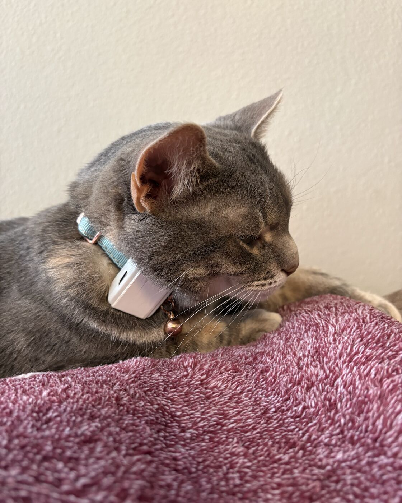
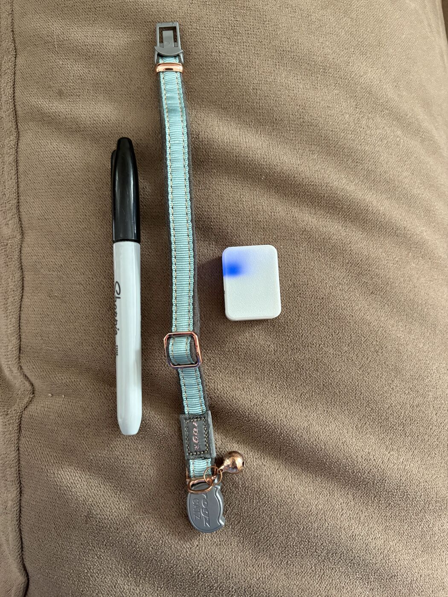
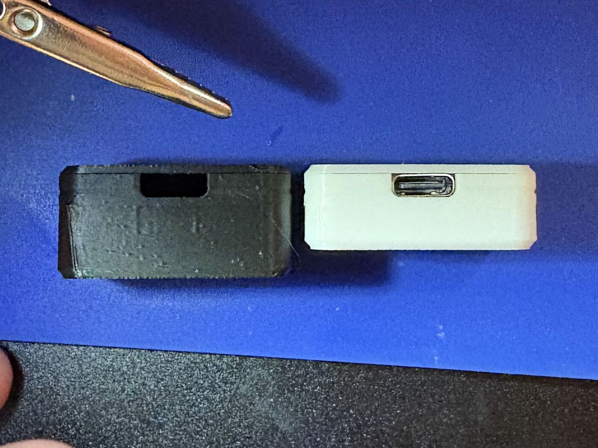

Pearl's seizures don't wait for someone to be watching.
Pearl has had seizures for years, and many of them happen when no one is there to see. Pearl One is a prototype collar I built so I could finally see what's happening. It records how she moves and sends me an alert when that movement looks like one of her past seizures. It uses no camera.
About Pearl
Pearl has seizures. They arrive without warning, at any hour, and often in clusters. For a long time the only record I had was my own memory of what I'd seen, and the seizures I didn't see left no record at all.
Today she's on medication and doing well. Her vet manages her treatment; the collar hasn't been used to make medical decisions. She can go days or weeks without seizures, but because they come in clusters, I'm always watching.

What she wears
A camera only sees what's in frame. A collar goes where the cat goes. Pearl One is a small motion sensor in a 3D-printed case on an ordinary collar. When Pearl's movement looks like one of her past seizures, it sends me an alert.
It also keeps an honest record. If part of a recording is missing, the record shows exactly which part.


October 2, 4:21 in the afternoon
This is the clearest case I have. I was in the room, the home camera was recording, and Pearl was wearing the collar.
Real video of a seizure
The clip shows Pearl having a seizure on our home camera. It runs about a minute and a half with no sound, and some people will find it upsetting. The timeline beside it tells the same story without the video.
The clip hasn't been added yet.
- On the home camera, Pearl's movement changes.
- The collar flags the motion. The alert it sends names this same second.
- I tap "seizure" in the app.
- I mark the end of the seizure.
Four separate records agree on 4:21:39: the camera's clock, a second recording of that clock, the collar's own data, and the alert. Nothing the collar recorded in that session was lost.
The record so far
| 8 | seizures captured on the collar between September 15 and October 13, 2026, each confirmed by me |
|---|---|
| 7 | of those eight have a record of me reporting that the alert worked |
| 1 | false alert confirmed: Pearl scratching, on October 7 |
| 473+ | hours of motion recorded across 80 sessions on 32 days |
Every session reports how complete it is. Gaps, recoveries and incomplete sessions stay in the record instead of being cleaned out. Early problems stay in the record too. Fixing them is how the system got better.
What this doesn't show yet
- So far, all the results come from one cat, Pearl. Testing across more of her family is next, including relatives who also have seizures.
- Pearl One isn't a medical device. It doesn't diagnose, treat, prevent or predict anything.
- The numbers above are counts from one household, not accuracy rates.
- Safety came first in the design, and three prototype collars now run around the clock at home, with their battery life tested. What's still needed is testing on a bigger scale than one household can manage: more cats, more homes, and an outside review.
- No vet or researcher has reviewed this work yet. That's the next step.
What comes next
Next comes a camera-free study with six cats across two households, planned and run so the results can be checked by someone else. More than 470 hours of recordings already exist from Pearl alone. I'm looking for:
- Veterinary and research partners who work with feline seizures
- Funding for that study and a sturdier version of the collar
- People who have taken a small hardware product from prototype to shelf
Longer term, I want to use machine learning to look for patterns before, during and after a seizure, and to find out whether they can be seen coming. That research comes next, once the current build-out is finished.
Who's building this
I'm Tim Pearce, Pearl's person. I've spent fifteen years building technology systems in hospitality, most recently as an enterprise architect. I'm not a vet or a hardware engineer. I'm a systems architect who knows his cats, and Pearl's condition, very well. That's exactly why I'm looking for partners who are.
I built Pearl One because I wanted to see patterns in Pearl's seizures over time, like when they happen and how often, so her vet and I can make better-informed decisions, and so it isn't all on paper and in my head. I built this for Pearl, but I want to help others, too.


Get in touch
If you work with cats, seizures, research or small hardware and this interests you, I'd like to hear from you.